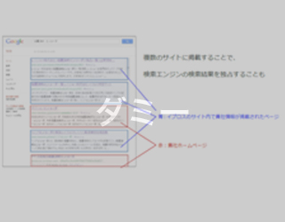

成功ノウハウ／自社サイトへの集客
サイト集客
自社の「媒体」への効率的な集客とは？
自社サイトは、自由な訴求が行える媒体（オウンドメディア）として、BtoBマーケティングにおいても重要視されています。サイトに集客を行い、適切な訴求を行えば、閲覧者の態度変容を促すことができ、顧客リストの獲得につながるためです。とはいえ、サイトをしっかりと作っても、訪問者がいなければ効果は上がりません。
自社サイトへの集客は、SEO対策、リスティングやバナー広告などが一般的です。
これらに加え、BtoBマーケティングで有用な、イプロスを活用した自社サイト集客をおすすめしています。
イプロスを活用したサイト集客とは？
ターゲットが多数閲覧している「イプロス」からの誘導
閲覧者の過半数が技術者のイプロスは、検索エンジン経由で訪れる訪問者よりも、より検討度合いが高い訪問者を獲得できます。もっとも簡単な方法は、イプロスのサイト内にページを無料登録しリンクを設置していただく、これだけです。これには、外部サイトであるイプロスからの被リンクを獲得し、サイトの検索エンジンからの評価を高め、SEO効果が高まるとともに、直接検討度合いの高い流入を獲得できる二重のメリットがあります。
また、イプロスに情報を掲載することにより、該当するキーワードでの検索結果を貴社関連の情報で専有し、検索エンジンからのより効率的な誘導を図ることもできます。

また、外資系企業などでよく聞かれる「自社のホームページを自由に変更・更新できない」などの問題を解決するために、イプロスの販促支援会員をご利用いただくケースも増えています。